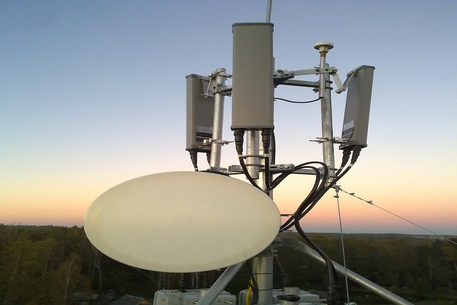
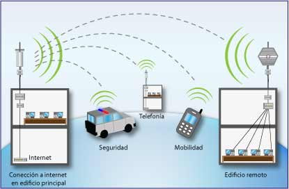

Gabriel Angel Poroma Gomez - 41
Una tecnología que permitió llevar conectividad de banda ancha a grandes distancias mediante comunicación inalámbrica.
CONOCER MÁS
WiMAX significa Worldwide Interoperability for Microwave Access. Es una tecnología de comunicación inalámbrica basada en el estándar IEEE 802.16, diseñada para proporcionar acceso de banda ancha a distancias mayores que las redes Wi-Fi convencionales.
Cobertura inalámbrica para áreas extensas.
Acceso a Internet mediante conexión inalámbrica.
Comunicación mediante ondas de radio.
WiMAX comenzó a desarrollarse a partir del estándar IEEE 802.16, creado para ofrecer conexiones inalámbricas de banda ancha a distancias mayores que las tecnologías Wi-Fi tradicionales.
Se creó el WiMAX Forum, una organización encargada de promover la tecnología, establecer perfiles de interoperabilidad y ayudar a que los equipos de diferentes fabricantes pudieran trabajar juntos.
El estándar IEEE 802.16-2004 impulsó el uso de WiMAX para conexiones inalámbricas fijas. Se utilizó principalmente para proporcionar acceso a Internet en lugares donde instalar cableado podía ser complicado.
Apareció IEEE 802.16e, que incorporó movilidad. Esto permitió desarrollar servicios de banda ancha inalámbrica que podían utilizarse mientras el usuario se desplazaba.
Durante estos años WiMAX comenzó a utilizarse en diferentes países y operadores como alternativa para ofrecer Internet de banda ancha inalámbrica, especialmente en zonas donde las redes cableadas tenían limitaciones.
Con la expansión de 4G LTE y el crecimiento de las redes de fibra óptica, WiMAX perdió presencia comercial. Muchos operadores comenzaron a migrar hacia tecnologías más nuevas y con mayor adopción.
WiMAX fue el resultado del trabajo conjunto de organismos de estandarización, empresas tecnológicas, fabricantes y especialistas.
Organización responsable del desarrollo del estándar IEEE 802.16.
Organización creada para promover la tecnología WiMAX y la interoperabilidad entre equipos.
Figura importante en la promoción y expansión internacional de WiMAX.
Participó en el desarrollo de soluciones relacionadas con WiMAX.
Participó en el desarrollo y promoción de soluciones basadas en WiMAX móvil.
WiMAX fue diseñado para proporcionar cobertura inalámbrica en áreas mucho más amplias que una red Wi-Fi convencional.
El alcance real dependía de la frecuencia, potencia, antenas, obstáculos y condiciones geográficas.

Cobertura local
Cobertura de mayor alcance
WiMAX tuvo presencia en Bolivia como una alternativa de acceso inalámbrico a Internet de banda ancha. Uno de los casos documentados fue el servicio WiMAX Premium de ENTEL.
ENTEL ofreció un servicio denominado WiMAX Premium, basado en el estándar IEEE 802.16e. Este servicio utilizaba tecnología inalámbrica para proporcionar acceso a Internet de banda ancha.
La información histórica de ENTEL señala que WiMAX Premium tenía cobertura en la ciudad de La Paz. Esto permitió utilizar una conexión inalámbrica sin necesidad de una conexión cableada directa hasta el usuario.
El servicio utilizaba la banda de 3,5 GHz y estaba basado en IEEE 802.16e, una evolución del estándar WiMAX que permitió desarrollar servicios de banda ancha inalámbrica.
WiMAX podía ser una alternativa en lugares donde instalar infraestructura cableada resultaba más complicado. Su capacidad de cubrir distancias mayores que una red Wi-Fi convencional fue una de sus principales características.
Con la expansión de tecnologías como 4G LTE y fibra óptica, WiMAX perdió presencia comercial. El servicio WiMAX Premium de ENTEL actualmente figura como no vigente comercialmente.
WiMAX ya no tiene el mismo protagonismo comercial que tuvo durante su etapa de expansión. Sin embargo, la tecnología forma parte de la historia del desarrollo del acceso inalámbrico de banda ancha en Bolivia.
En Bolivia, WiMAX tuvo presencia principalmente como una alternativa de banda ancha inalámbrica. Algunas empresas de telecomunicaciones utilizaron esta tecnología durante una etapa de expansión del acceso a Internet inalámbrico.
ENTEL ofreció servicios de Internet mediante tecnología WiMAX, incluyendo WiMAX Premium. El servicio utilizaba el estándar IEEE 802.16e y operaba en la banda de 3.5 GHz, con cobertura histórica en la ciudad de La Paz.
Tigo tuvo presencia histórica con soluciones de acceso inalámbrico, pero actualmente no basa su servicio de Internet en la tecnología WiMAX. Sus servicios actuales utilizan tecnologías como redes móviles, HFC y fibra óptica.
La evolución de las telecomunicaciones hizo que tecnologías como 4G LTE y la fibra óptica adquirieran mayor importancia. Por ello, WiMAX pasó de ser una alternativa de banda ancha inalámbrica a tener principalmente un valor histórico y tecnológico.
WiMAX tuvo un papel importante en el desarrollo de la banda ancha inalámbrica. Sin embargo, con la expansión de nuevas tecnologías, su presencia comercial fue disminuyendo.
Banda ancha inalámbrica de largo alcance.
Mayor expansión de las redes móviles y acceso a Internet.
Nuevas redes móviles con mayor capacidad y menor latencia.
WiMAX perdió presencia comercial frente a tecnologías como 4G LTE, 5G y las conexiones de fibra óptica. A pesar de esto, forma parte de la evolución de las telecomunicaciones inalámbricas y permitió llevar Internet de banda ancha a lugares donde las conexiones cableadas podían ser difíciles de implementar.
Aunque actualmente tiene una presencia mucho menor, WiMAX representa una etapa importante en el desarrollo de las comunicaciones inalámbricas de banda ancha.